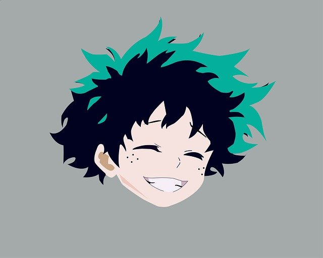
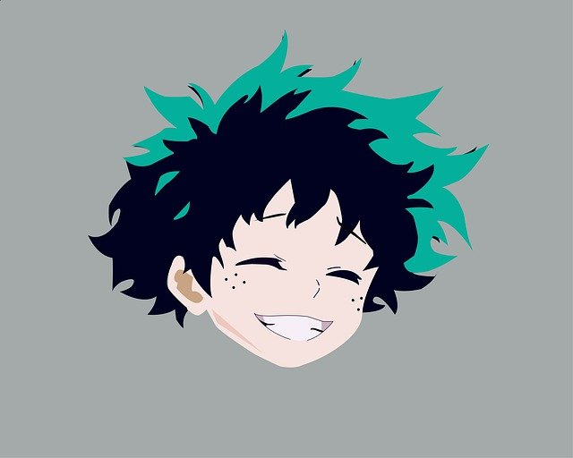

about me!
Hi, I'm Allison! I'm 16 years old and a rising senior in the Bay Area and I use she/her pronouns.
My favorite color is blue(specifically pastel blue)! Honestly, any color is better in pastel. I might
grow out of that mindset though ahaha. I am a beginner coder, though I have the most basic knowledge
about HTML, CSS, JavaScript, Python, and Java. This website is a way for me to practice, so thank
you for being here for it! I enjoy listening to and creating music (by creating I mean
playing music on the flute, piano, or singing) and it somewhat is my entire identity. Over quarantine, I
have taught myself how to crochet and can now make little miniature animals, though I've stopped since I
ran out of stuffing! I spend way too much time these days watching anime, Twitch streamers, and YouTube
(mostly true crime and clipsters from streams at the moment), and I'm totally ok with it ;) I really want
to be a gamer(I've wanted to play Genshin and Valorant for the longest time), but as a Mac user, I have
resigned myself to mobile games, Nintendo Switch games, and watching streamers play. I hope I'll be able to
play someday! Thanks for reading all the way through :D Next is a little summary of the things I love!
some things i love!


music reading animals
 

gaming anime